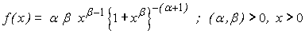

![[burrxii_ex0]](burrxii_ex0.bmp) Burr XII Model
Burr XII Model

model
{
for( i in 1 : N )
{
x[i] ~ dburrXII(alpha, beta)
}
alpha ~ dunif(0.01, 10.0)
beta~ dunif(0.01, 10.0)
}
Simulated data set with alpha = 2.0 and beta = 5.0
The MLE’s are using 'maxLik' package in R alpha.mle = 2.11996 beta.mle = 4.03369
Data ( click to open )
Inits for chain 1 Inits for chain 2 ( click to open )
Results